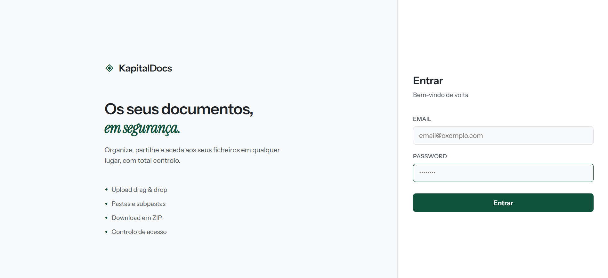

Caso // Kapital360
KapitalDocs — Gestão documental
Sistema interno para organizar, partilhar e controlar ficheiros da Kapital360 — com pastas, pesquisa e acesso autenticado.

O problema
Documentos críticos espalhados por pastas locais e e-mails atrasam o trabalho e dificultam o controlo de quem acede a quê.
A solução
- Login com sessão autenticada e área restrita a utilizadores da empresa.
- Navegação por pastas e subpastas (ex.: Documentos TI / Kapital 360).
- Upload por drag & drop, com tipos permitidos e limite de tamanho.
- Pesquisa, listagem com tamanho/data e acções sobre cada ficheiro, incluindo download em ZIP.
- Gestão de utilizadores no próprio produto.
Impacto
O fluxo documental passa a ter um sítio único, pesquisável e com controlo de acesso — em produção em docs.kapital360.ao.
